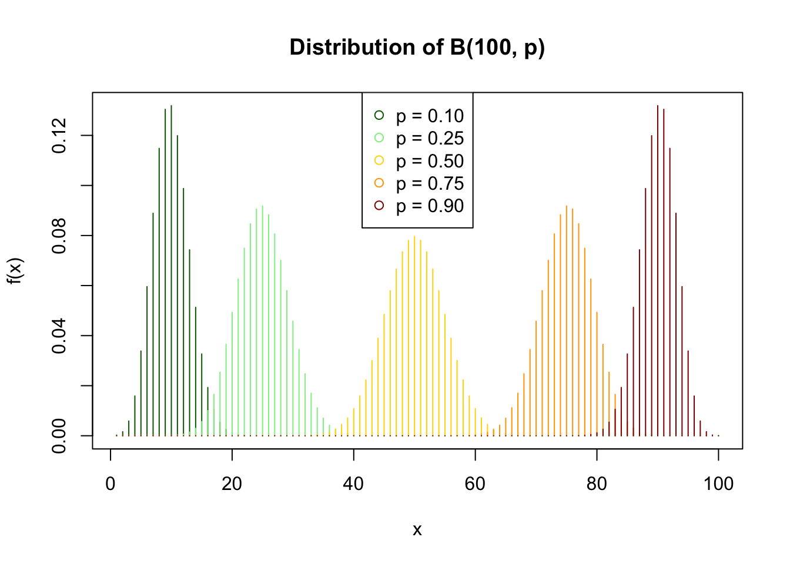
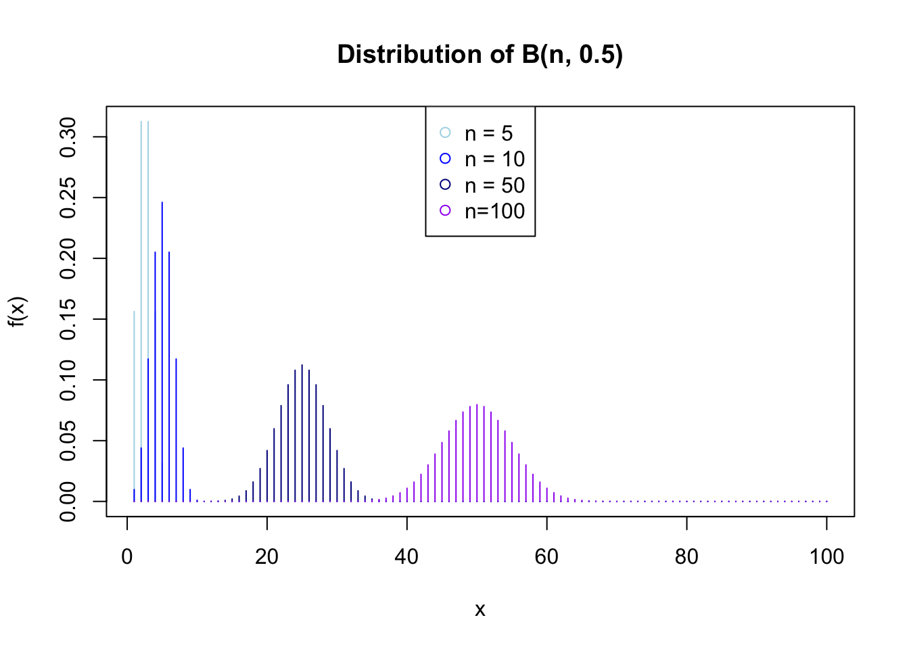
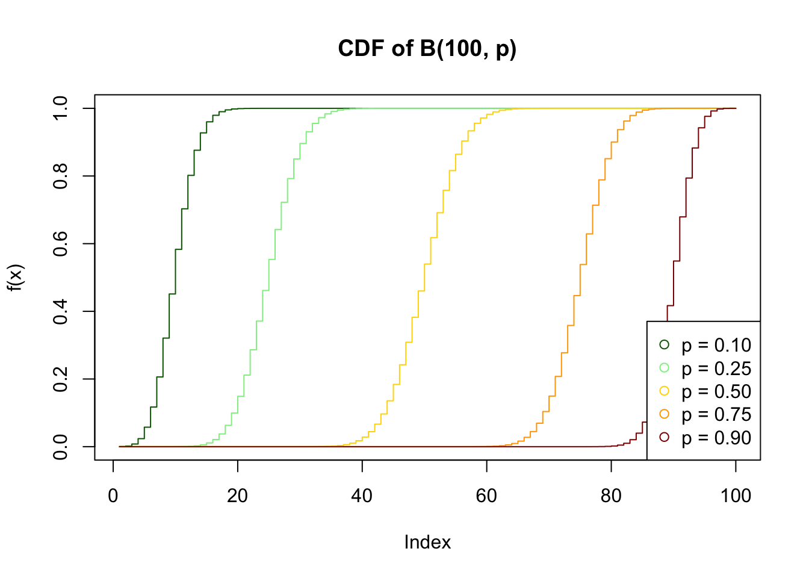
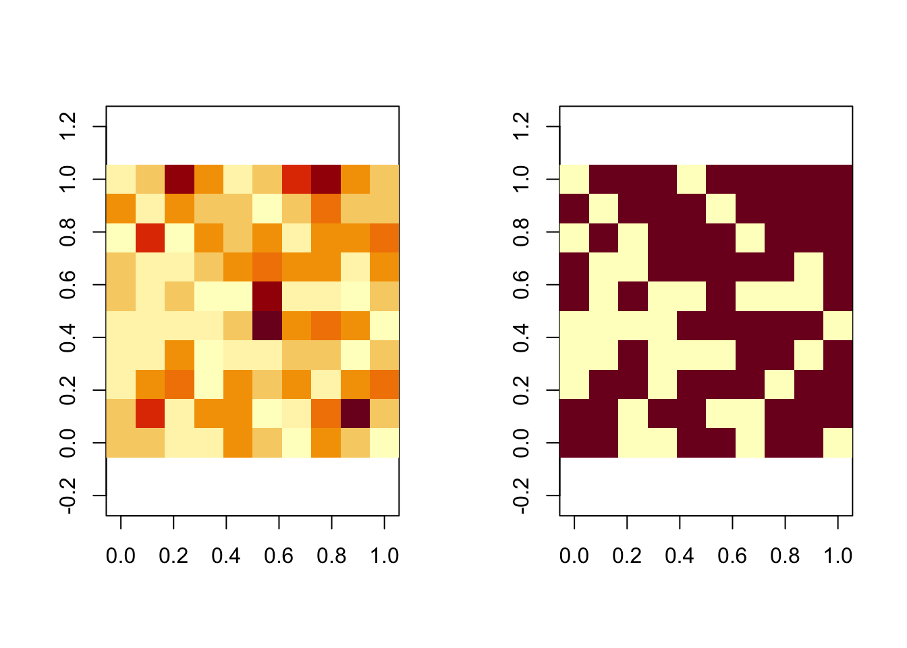
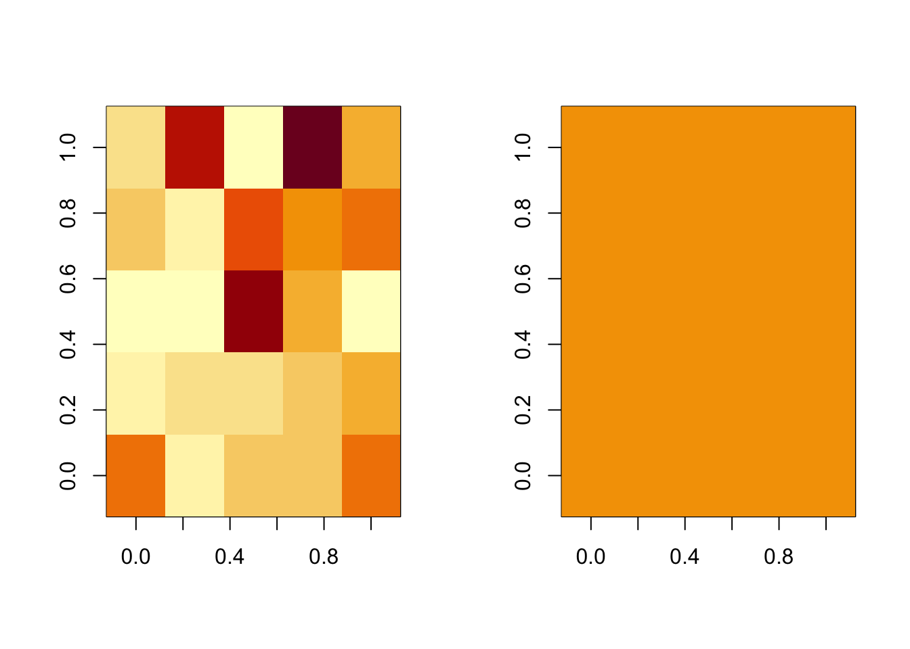

dbinom(3, size=3, prob=0.5)
#> [1] 0.12517 Discrete functions
17.1 Discrete uniform function
(to be done)
17.2 Discrete binomial function
Throwing a coin holds two possible values and generates a so called Bernoulli random variable. We can represent the outcome by a 0 or 1. Let’s suppose 1 (whichever side you choose) is what we consider a success. This is the usual convention.
A binomial distribution is the sum of independent and identically distributed Bernoulli random variables.
When there are \(n\) Bernoulli trials (all independent), then the sum of those trials, each with the same probability of success \(p\)) is binomially distributed, with parameters \(n\) and \(p\). It is defined with the two parameters: \(B(n, p)\) with parameter \(p \in [0; 1]\), the probability that the event of interest (success) happens
A Bernoulli random variable \(X = \{0 ;1\}\) can thus be expressed as a binomial distribution with a single toss \(n=1\), \(X \sim B(1, p)\)
X 1 0
-------- --------- ---------
$P(X=i)$ $p$ $q = 1-p$The probability that \(X\) takes any other value is null (unless the coin stays on its edge…)
In a binomial distribution, the expectation is \(E(X) = np\) and the variance is \(Var(X) = npq\).
The probability that one obtains \(k\) successes over \(n\) repetitions (experiences), is then given by \(P(X=k) = (n|k) p^k q^{n-k}\).
For an intuition we can simulate 3 trials and produce a tree of probabilities. Where we see that the probability of 3 successes is one of 8 possible outcomes,
1st 2nd 3rd Total
result result result
--1-- 3 successes
--1---|
| --0-- 2 successes
--1-----|
| | --1-- 2 successes
| --0---|
| --0-- 1 success
----|
| --1-- 2 successes
| --1---|
| | --0-- 1 success
--0-----|
| --1-- 1 success
--0---|
--0-- 0 successwhich in R is:
Other example: suppose we run a trial 10 times, knowing the probability of success is 0.5, what is the probability that the total number of successes will be exactly 3? or exactly 5 ? or 10?
dbinom(3, size=10, prob=0.5)
#> [1] 0.1171875
dbinom(5, size=10, prob=0.5)
#> [1] 0.2460938
dbinom(10, size=10, prob=0.5)
#> [1] 0.0009765625Let’s generalize a little for values from 1 to 100 and different probabilities:
x <- 1:100
dBer1 <- dbinom(x, size=100, prob=0.1)
dBer2 <- dbinom(x, size=100, prob=0.25)
dBer3 <- dbinom(x, size=100, prob=0.5)
dBer4 <- dbinom(x, size=100, prob=0.75)
dBer5 <- dbinom(x, size=100, prob=0.9)With 100 trials, you can see the density ‘curve’ is symmetrical but shifted towards higher total success when the probability of success gets higher, and is flatter when closer to 0.5, (and symmetrical behaviour for cases for \(p\) and \(q=1-p\))
plot(x, dBer1,main = 'Distribution of B(100, p)', ylab = 'f(x)', type="h", col = 'darkgreen')
points(x, dBer2, col = 'lightgreen', type="h")
points(x, dBer3, col = 'gold', type="h")
points(x, dBer4, col = 'orange', type="h")
points(x, dBer5, col = 'darkred', type="h")
legend("top",pch=1,
legend = c("p = 0.10", "p = 0.25", "p = 0.50","p = 0.75", "p = 0.90"),
col = c("darkgreen","lightgreen", 'gold', 'orange',"darkred"))
Back to using \(p=0.5\), we now look at the effect of sample size to see how from right-skewed it shifts to a normal distribution:
dn1 <- dbinom(x, size=5, prob=0.5)
dn2 <- dbinom(x, size=10, prob=0.5)
dn3 <- dbinom(x, size=50, prob=0.5)
dn4 <- dbinom(x, size=100, prob=0.5)plot(x, dn1, col="lightblue", type="h",
main = 'Distribution of B(n, 0.5)', ylab = 'f(x)')
points(x, dn2, col = 'blue', type="h")
points(x, dn3, col = 'blue4', type="h")
points(x, dn4, col = 'purple', type="h")
legend("top", pch = 1,
legend = c("n = 5", "n = 10", "n = 50", "n=100"),
col = c("lightblue", 'blue',"blue4", 'purple'))
While we have looked at the distribution of the probabilities for a total outcome after repetitions to be of a given “exact” value using the density function dbinom(), we can use the cumulative form pbinom() to know where the total outcome is smaller or equal to a given value. For example, after 100 experiments with probability 0.5, what is the probability I obtain less than 50 successes? Or \(n/2\) successes depending on \(n\) ?
pbinom(50, size=100, prob=0.5)
#> [1] 0.5397946
pbinom(5, size=10, prob=0.5)
#> [1] 0.6230469
pbinom(5000000, size=10000000, prob=0.5)
#> [1] 0.5001262The cumulative density function can be plotted as follows for different probabilities and a given size:
plot(pbinom(1:100,size=100,prob=0.10), main = 'CDF of B(100, p)', ylab = 'f(x)', type="s", col = 'darkgreen')
lines(pbinom(1:100,size=100,prob=0.25), type="s", col = 'lightgreen')
lines(pbinom(1:100,size=100,prob=0.5), type="s", col = 'gold')
lines(pbinom(1:100,size=100,prob=0.75), type="s", col = 'orange')
lines(pbinom(1:100,size=100,prob=0.9), type="s", col = 'darkred')
legend("bottomright",pch=1,
legend = c("p = 0.10", "p = 0.25", "p = 0.50","p = 0.75", "p = 0.90"),
col = c("darkgreen","lightgreen", 'gold', 'orange',"darkred"))
The binomial distribution is used in many cases where there are two potential outcomes that are mutually exclusive. For example when we try to explain why some plots of land are developed or not or why people use the car rather than an active mode of transport.
17.3 Discrete Poisson function
The Poisson distribution is for rare discrete occurrence events. It is used when counting the occurrence of a certain event that appears randomly but at a known rate or density. The main statistical property of the Poisson distribution is that its variance equals its mean
There are many uses in geography, transport or planning, such as the counting of cars passing a rural road segment over a certain time, or the distribution of points (trees, bees, houses…) over a homogeneous set of spatial polygons (grid cells)
Suppose there are 100 houses or trees over 100 grid cells. The overall density (\(\lambda\)) is 1. What is the probability that a cell does not receive any single house? Or in other words what will be the proportion of cells without a single house or tree?
ppois(lambda = 1,q=0)
#> [1] 0.3678794How does this change when the overall density is even higher or lower? i.e. with 150 houses/trees or only 25?
ppois(lambda = 1.5,q=0)
#> [1] 0.2231302
ppois(lambda = 0.5,q=0)
#> [1] 0.6065307
ppois(lambda = 0.25,q=0)
#> [1] 0.7788008Let’s generate such cases and get the frequency of counts to “see” those occurrences:
pois025<-rpois(100,0.25)
pois025
#> [1] 0 0 0 0 0 1 0 0 0 1 1 0 0 1 0 0 0 0 0 0 1 0 0 2 1 0 0 0 0 0 0 0 0 0 1 0 0
#> [38] 0 1 1 0 0 0 0 1 1 0 1 0 1 0 0 1 0 0 0 0 0 1 0 1 1 1 1 0 2 0 1 0 0 0 0 1 1
#> [75] 0 0 0 1 0 1 0 0 1 0 0 0 0 0 0 0 0 0 0 1 1 0 0 0 0 0
table(pois025)
#> pois025
#> 0 1 2
#> 71 27 2
pois150<-rpois(100,1.5)
pois150
#> [1] 0 3 2 0 2 6 5 1 0 2 1 2 1 2 1 1 2 0 3 4 1 1 0 2 0 2 1 2 4 0 0 2 0 2 1 4 3
#> [38] 3 0 2 3 1 0 0 2 2 0 2 0 2 3 2 1 2 1 3 2 2 2 1 1 0 1 0 1 4 2 1 0 0 3 1 1 1
#> [75] 3 1 2 4 4 0 1 1 2 3 2 0 2 1 0 1 2 1 1 1 3 3 0 1 0 1
table(pois150)
#> pois150
#> 0 1 2 3 4 5 6
#> 23 30 27 12 6 1 1We examine how the probability of different counts (not just 0 or more) changes when lambda changes:
lambdan<-data.frame(n=rep(1:4,4),lambda=rep(seq(1,0.25,by=-0.25),each=4))
lambdan$d<-dpois(lambdan$n,lambdan$lambda)
lambdan
#> n lambda d
#> 1 1 1.00 0.3678794412
#> 2 2 1.00 0.1839397206
#> 3 3 1.00 0.0613132402
#> 4 4 1.00 0.0153283100
#> 5 1 0.75 0.3542749146
#> 6 2 0.75 0.1328530930
#> 7 3 0.75 0.0332132732
#> 8 4 0.75 0.0062274887
#> 9 1 0.50 0.3032653299
#> 10 2 0.50 0.0758163325
#> 11 3 0.50 0.0126360554
#> 12 4 0.50 0.0015795069
#> 13 1 0.25 0.1947001958
#> 14 2 0.25 0.0243375245
#> 15 3 0.25 0.0020281270
#> 16 4 0.25 0.0001267579Interesingly, the distribution depends on the segments of observations or, in space, the rsolution of the grid, i.e. the modifiable areal unit problem (MAUP)
Consider the following:
Let’s define a grid of 100 (10x10) cells over a mixed forest. Suppose a poisson process with mean and variance = 1 gives the number of coniferous trees within that forest. We can expect around 37 % of cells to have at least a coniferous, right? (see above).
Now suppose the mean and variance increase to 2, we are still in a poisson process because the number of events is still quite rare even there are less empty cells.
ppois(lambda=1, q=0)
#> [1] 0.3678794
ppois(lambda=2, q=0)
#> [1] 0.1353353But if we now groups cells to make them larger, say divide the space into 25 cells (5 x 5) rather than 100. Then you see that lambda is multiplied by 4 and the probability of a zero count:
ppois(lambda=2*4, q=0)
#> [1] 0.0003354626Again, following the the Central Limit Theorem, the higher will be the mean (λ) and thus the spatial aggregation, the closer the distribution of coniferous will be to a normal distribution.
r2_100<-rpois(lambda=2, n=100)
r2_100
#> [1] 2 2 1 1 3 2 0 3 2 0 2 5 1 3 3 0 1 4 7 2 1 3 4 0 3 2 3 1 3 4 1 1 3 0 1 1 2
#> [38] 2 0 2 1 1 1 1 2 7 3 4 3 0 2 1 2 0 0 6 1 1 0 2 2 1 1 2 3 4 3 3 1 3 0 5 0 3
#> [75] 2 3 1 3 3 4 3 1 3 2 2 0 2 4 2 2 1 2 6 3 1 2 5 6 3 2
par(mfrow = c(1, 2))
image(matrix(r2_100, 10),asp=1)
image(matrix(r2_100, 10)>1, asp=1)
Re-aggregated:
large<-matrix(rep(1:5,each=20)*10+rep(rep(1:5, each=2),10),10)
large
#> [,1] [,2] [,3] [,4] [,5] [,6] [,7] [,8] [,9] [,10]
#> [1,] 11 11 21 21 31 31 41 41 51 51
#> [2,] 11 11 21 21 31 31 41 41 51 51
#> [3,] 12 12 22 22 32 32 42 42 52 52
#> [4,] 12 12 22 22 32 32 42 42 52 52
#> [5,] 13 13 23 23 33 33 43 43 53 53
#> [6,] 13 13 23 23 33 33 43 43 53 53
#> [7,] 14 14 24 24 34 34 44 44 54 54
#> [8,] 14 14 24 24 34 34 44 44 54 54
#> [9,] 15 15 25 25 35 35 45 45 55 55
#> [10,] 15 15 25 25 35 35 45 45 55 55
sumbylarge<-aggregate(r2_100, by=list(matrix(large)), FUN=sum)
matrix(sumbylarge$x,5)
#> [,1] [,2] [,3] [,4] [,5]
#> [1,] 11 6 5 8 7
#> [2,] 6 7 4 6 14
#> [3,] 8 7 15 12 5
#> [4,] 8 8 9 10 17
#> [5,] 11 9 5 11 9
par(mfrow = c(1, 2))
image(matrix(sumbylarge$x,5))
image(matrix(sumbylarge$x,5)>1)